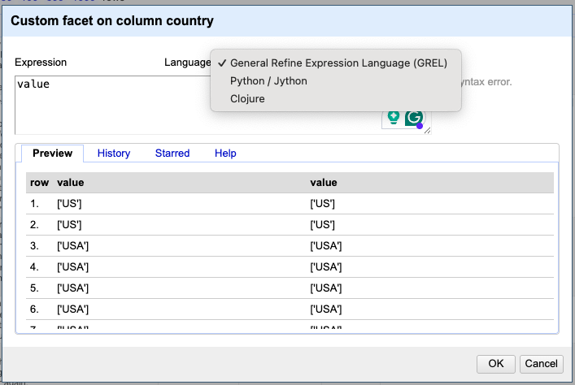
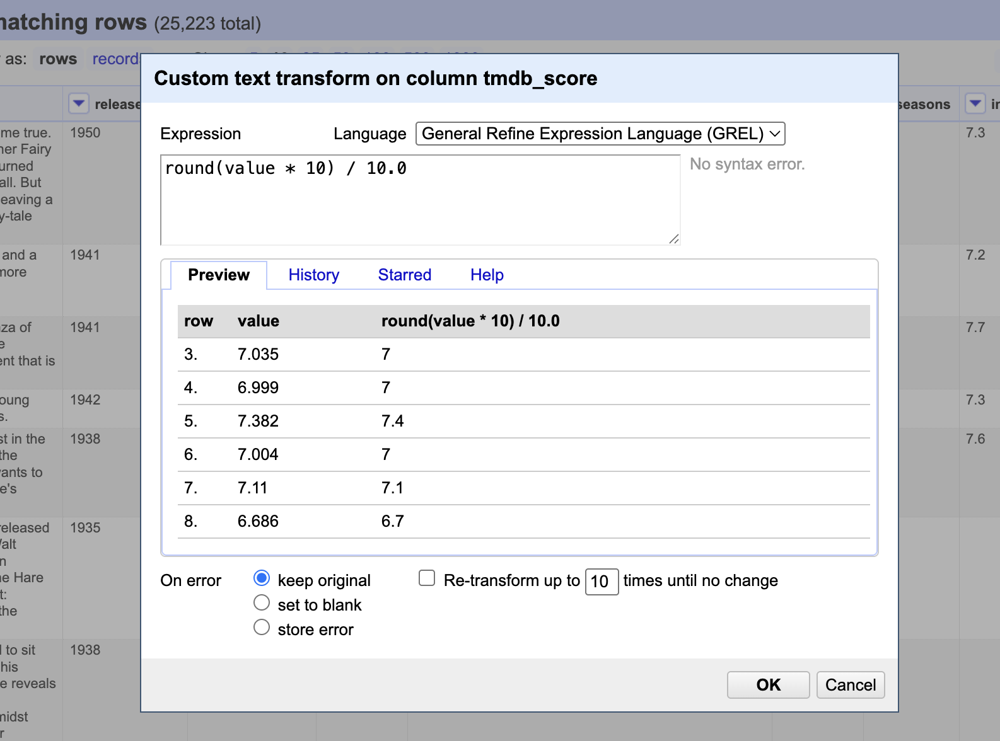
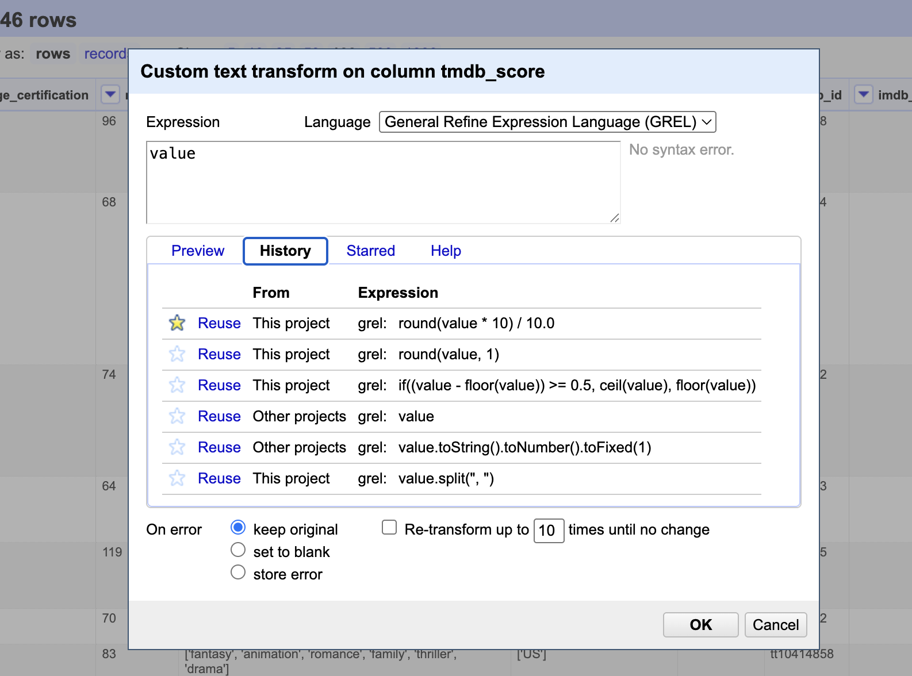
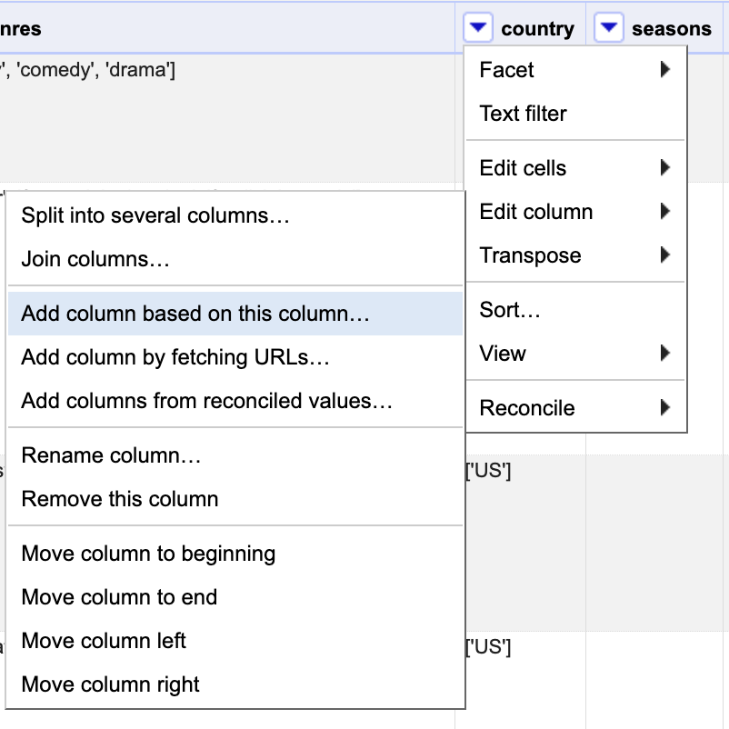
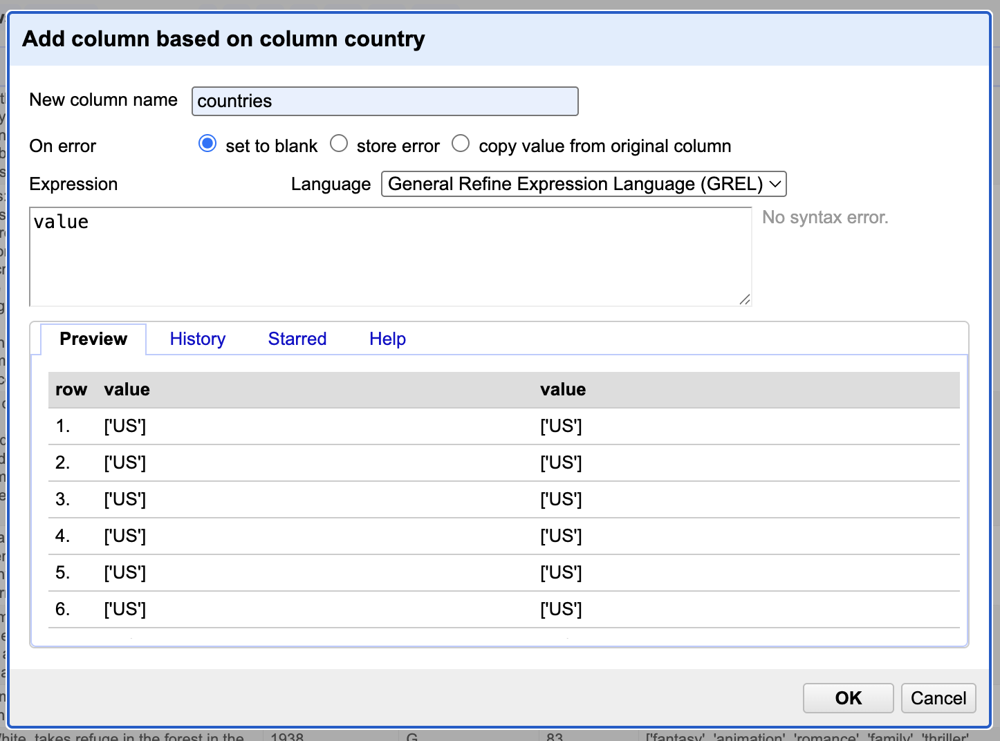

More Transformations with GREL
Now that we’re familiar with common transformations using the menu’s preset options, let’s take a step further by exploring how to customize transformations with more advanced features.
In OpenRefine, expressions can be used in various areas to enhance data cleanup and transformation. You can apply expressions in the following functions:
Facets:
Custom text facet
Custom numeric facet
Customized facets (click “Change” after creating them to open the expressions window)
Edit Cells:
Transform
Split multi-valued cells
Join multi-valued cells
Edit Column:
Split
Join
Add column based on this column
Add column by fetching URLs
Any of these options should prompt the Expressions Editor window as shown below:

In the Expressions Editor window, you can choose from several supported languages. By default, it uses GREL (General Refine Expression Language), OpenRefine also supports Clojure and Jython, these lasts represent Lisp and Python implementations for Java, which makes sense considering OpenRefine is java-based application.
Additional expression languages may be available through extensions. While these languages differ in syntax, they support many of the same variables and functions. For example, the GREL expression value.split(" ")[1] is written in Jython as return value.split(" ")[1]. But they may also look a lot more different. For example, the GREL function toUppercase(value) would be expressed in Clojure as (clojure.string/upper-case value).
We’ll now look at some practical examples that are relevant to our sample dataset. These will give you a sense of what’s possible—but since there’s so much more you can do, we encourage you to explore further using the Recipe for more detailed information and hands-on examples. It’s a great resource to help you experiment further at your own pace.
Custom Data Transforms with GREL
Let’s start by focusing on the imdb_score and tmdb_score columns. These columns contain floating-point numbers, right? To confirm, we can run a text facet to eyeball those values. As we examine the values, we’ll notice that tmdb scores don’t follow the one decimal format as the imdb. in the number of decimal places. You might be thinking, “This would be such an easy fix in Excel—there’s literally a button for it on the toolbar. Why bother using OpenRefine for that?”
That’s a fair point—Excel does make it easy to change how numbers look by formatting decimal places. But here’s the catch: Excel typically changes the display of the number, not the actual underlying value. So a number like 7.456 may appear as 7.5, but it’s still stored as 7.456, which can cause inconsistencies in downstream processes like sorting, filtering, or exporting.
OpenRefine, on the other hand, lets you transform the actual data. You can standardize the number of decimal places across all values using expressions in GREL. That way, you’re not just changing how the data looks—you’re ensuring consistency at the data level, which is critical for clean, reliable datasets.
Also, OpenRefine is designed for handling large datasets with repeatable, auditable transformations. So once you clean up one column, you can apply the same steps to others, or even to other projects. That’s something Excel just isn’t built for.
Adjusting Decimal Points
In order to adjust tmdb scores values, we will need to use an expression. Can you guess which one?
Let’s try round(value * 10) / 10.0 which will essentially round the value to the nearest integer and then take this whole number and shift the decimal point back. Apply that, then check how many cells were modified. But wait…have you remembered to convert the values to numbers? That is a key step, since the round function only applies to numbers!
Before applying the expression OpenRefine gives you a hint in case there are any syntax errors and how values will look like if you proceed. You may also choose the behavior in case some rows

You may also choose how the system should behave if any error occurs during the transform:
Keep original: Leave the original value if an error occurs.
Set to blank: Replace the value with a blank if an error occurs.
Store error: Display an error message in the cell if an error occurs.
In this particular case, we chose to retain the original values because we had already verified that the cells contain only numeric data. Otherwise, any blank cells would have resulted in errors.
Reusing Expressions
Another great feature of OpenRefine is the ability to easily reuse expressions within the same project or across different ones. The History tab records all the expressions you’ve written.

Apparently, there’s no limit to how many are stored, so it may accumulate expressions you didn’t end up using or had to revise. For expressions that worked well, consider starring them to make future reuse easier. However, note that the history is cleared when you upgrade to a new version of OpenRefine. The Help tab is also handy for quick references on how to write expressions.
Dealing with Arrays
Now that we’ve completed a basic custom transformation and gained a better understanding of how GREL works, let’s turn our attention back to the country column. Earlier, we corrected entries where “USA” was used instead of “US” to ensure that all country codes follow the two-character format defined by the ISO.
By applying a text facet, we will notice that there are over 1,030 unique values. This high number is due to OpenRefine treating different sequences of multiple countries as distinct entries. Although if we were to check country representation within our dataset, this would be challenging because the country information is currently stored as arrays.
An ‘Array’ is a data type which can contain a list of values. In OpenRefine an array is represented by the use of square brackets containing a list of values separated by commas.
Arrays can be sorted, de-duplicated, and manipulated in other ways in GREL expressions, but cannot be stored directly in an OpenRefine cell. Arrays in OpenRefine are usually the result of a transformation written with GREL. For example the split function takes a string, and changes it into an array based on a ‘separator’.
In OpenRefine, cells are designed to hold text values—typically strings or single pieces of other data types. Arrays, which are structured collections of multiple values, cannot appear directly in a cell as an actual data type. Instead, if a cell appears to contain multiple items (like a list of countries), it’s usually represented as a string with a delimiter, here expressed as commas.
To work with these values individually, you often need to split the string into separate parts using a transformation function like split(), which temporarily treats the cell content as an array for processing purposes.
Let’s break down the approach for transforming the data, starting with replacements and then splitting arrays into individual elements. Our goal is to organize the information in a way that makes it easier to identify the top three countries leading the most productions in our dataset.
Keep in mind that for rows listing two or more countries, the countries are ordered by their significance in the production—not alphabetically.
While arrays are not necessarily messy data, we can apply GREL to separate pieces of information to facilitate data analysis. But first, let’s ensure we make a copy of the country column and name it countries.


From now on, we will continue working with the “country” column and live “countries” with the array. For the column “country” our task will be to extract only the first value in the array.
First, let’s ensure we remove the both square brackets…
value.replace('[', "").replace(']', "")
But wait, we still have single quotes to remove…so let’s try:
value.replace("'", "")
And finally, we would ask to only keep the first country listed.
value.split(",")[0]
That’s right! The first position starts at 0 not 1.
We employed a three-step approach to accomplish that, though these steps could also be consolidated into a single, more streamlined expression.
value.replace("[", "").replace("]", "").replace("'", "").split(",")[0]
Based on this new column, which three countries lead in production across the streaming services in our dataset? If you answered the USA (US), India (IN), and Great Britain (GB), you’re absolutely right!
Before we move on to the next episode, there’s one more important step to cover: data documentation. Since we’ve added new columns to our dataset, it’s essential that we update our documentation accordingly. This ensures that anyone working with the data—now or in the future—can easily understand what each column represents, how it was created, and why it’s relevant. Proper documentation keeps your project organized, reproducible, and easier to maintain.
Thankfully, OpenRefine supports reproducibility by keeping a detailed history of every transformation you apply—making it easy to trace, review, or reapply steps. In the next episode, we’ll explore how to export and share your data cleaning workflow so that anyone can reproduce the exact same process with just a few clicks.